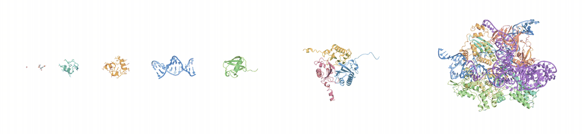

I am a first-year PhD student in the GCB program at the University of Pennsylvania. My research uses machine learning-based simulations to make medicine programmable.

Undergraduate thesis, 2026
Frontiers in Bioinformatics, 2026
arXiv, 2025
International Journal of Molecular Sciences, 2022
And these toys did so firmly possess
his imagination with an infallible opinion
that all that machina of dreamed inventions
which he read was true,
as he accounted no history in the world
to be so certain and sincere as they were.